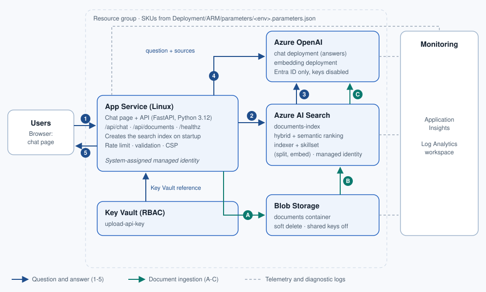

What gets deployed
Eleven templates, in the order deploy.sh runs them. The SKU column shows which variables in config/skus.env control each resource.
| # | Resource | What it does | Configuration | SKU inputs | Template |
|---|---|---|---|---|---|
| 1 | Network | Hub and spoke VNets, NSGs, peering, private DNS | Deny-by-default NSGs; six private DNS zones linked to both VNets | None | 01-network.json |
| 2 | Log Analytics and Application Insights | Logs and application telemetry | Workspace-based Application Insights | LOG_ANALYTICS_SKU LOG_RETENTION_DAYS | 02-monitor.json |
| 3 | Key Vault | Holds keys and connection strings | RBAC authorization, public access off, private endpoint | KEYVAULT_SKU | 03-keyvault.json |
| 4 | Storage Account | Source documents | documents container, anonymous access off, private endpoint | STORAGE_SKU STORAGE_ACCESS_TIER | 04-storage.json |
| 5 | Cosmos DB | Chat session history | sessions container on /sessionId, private endpoint | COSMOS_CAPACITY_MODE COSMOS_THROUGHPUT | 05-cosmosdb.json |
| 6 | Azure AI Search | Hybrid retrieval with semantic ranking | Keyword + vector + semantic reranking, private endpoint | SEARCH_SKU SEARCH_REPLICAS SEARCH_PARTITIONS SEARCH_SEMANTIC | 06-search.json |
| 7 | Azure OpenAI | Chat and embedding models | Own region setting (default East US 2), private endpoint in your VNet | CHAT_MODEL_NAME CHAT_DEPLOYMENT_SKU CHAT_CAPACITY_K_TPM EMBEDDING_MODEL_NAME | 07-openai.json |
| 8 | App Service | Runs the chatbot web app | Linux, managed identity, VNet integration, private endpoint | APP_PLAN_SKU APP_RUNTIME | 08-appservice.json |
| 9 | Application Gateway | The only public endpoint | Static public IP with DNS name; HTTP on port 80 until you add a certificate | APPGW_SKU APPGW_CAPACITY | 09-appgateway.json |
| 10 | Key Vault secrets | Stores service keys for the app | OpenAI, Search, Cosmos DB and Storage secrets, written without opening the vault | None | 10-secrets.json |
| 11 | Access roles | Lets the web app reach each service | Least-privilege roles for the app's managed identity | None | 11-rbac.json |
No resources match that filter. Clear the box to see all eleven.
How it fits together
Customers reach Application Gateway in the hub network. It forwards to the web app in the spoke network, and the app talks to every backend service through private endpoints. No backend service has a public address.

Set the SKUs in one file
Open config/skus.env, change a value, and run ./deploy.sh. You never edit the templates. These are the defaults.
- App Service
P1v3, Python 3.12- Application Gateway
Standard_v2, 1 instance- AI Search
standard, 1 replica, 1 partition, semantic ranker on- Chat model
gpt-4.1-mini, Standard, 30K tokens per minute- Embedding model
text-embedding-3-large, Standard, 30K tokens per minute- Cosmos DB
- Provisioned, 400 RU/s
- Storage
Standard_LRS, Hot- Key Vault
standard, 7-day soft delete- Monitoring
- 30-day logs, 90-day Application Insights
Deploy it
You need an Azure subscription where you can create role assignments (Owner, or Contributor plus User Access Administrator), Azure OpenAI quota, the Azure CLI, jq, and Bash (use WSL or Git Bash on Windows).
- Clone the repository
git clone https://github.com/TTNS-Deployments/RAG_Chatbot.git cd RAG_Chatbot
- Sign in and pick the subscription
az login az account set --subscription "<subscription-id-or-name>"
- Set your SKUs
Edit
config/skus.env. Check the chat model against what your region offers withaz cognitiveservices model list --location eastus2 -o table. - Run the script
chmod +x deploy.sh ./deploy.sh
The script prints the plan, asks you to confirm, and checks that your models exist in the OpenAI region before it creates anything. A full run takes about 20 to 40 minutes. - Add HTTPS The gateway listens on HTTP port 80 only. Add a certificate and an HTTPS listener before real users arrive; the README has the commands.
- Deploy your app and build the index Publish the chatbot code to the private App Service from a machine inside the VNet, then create the search index and load documents.
Good to know
Private by default
Only Application Gateway is public. Keys and connection strings sit in Key Vault, and the web app reads them through its managed identity.
Models change
The chat model named in older solution documents may be retired. The script checks your chosen models against the region before deploying.
Cost
Application Gateway, the App Service plan, and AI Search charge continuously. Resize them in config/skus.env.
Tear down
az group delete --name rg-chatbot-dev --yes --no-wait removes everything. Purge the soft-deleted Key Vault and OpenAI account before reusing their names.